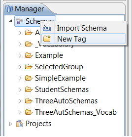

Tags
Before schemas can be opened with Affinity they must first share a common Tag. Tags may be created, edited, and deleted from within OpenII. The Manager pane, located at the bottom left of the OpenII user interface, is used to manage Tags.
Creating Tags
To create a Tag, right click on Schemas and select the New Tag menu option, as shown in the figure below.  When the Create Tag box appears, type a Tag Name into the appropriate field as shown in the figure below.
Note that the OK option in the Create Tag box will not be enabled until one or more schemas are added to the Tag.
To add a schema to the Tag, in the Create Tag box, click Add. A Schema Selection box will appear as shown in the Figure below. A schema can be selected from the Schema Selection box by typing the schema name in the appropriate field, double clicking on the name of a schema, or selecting multiple schemas. Once all desired schemas have been added, click OK to return to the Create Tag box.
The schemas will now appear in the Create Tag box, as shown below. Click OK again to finish creating the Tag.
The newly created Tag will appear as a folder in the Tag Manager. For example, in the figure below, the "Cars" Tag has been created and it contains seven schemas. Additional schemas can be added or removed from the created tag. Or, the schemas can be opened with Affinity since all of the schemas in the "Cars" folder share a common tag.
Editing Tags
Once a Tag has been created, schemas can be added or removed from the Tag.
Adding a Schema to a Tag
To add schemas to a Tag, right-click on the Tag name and select Edit Tag from the menu, as show below. Once the Edit Tag box appears, as shown below, click on Add. A Schema Selection box will appear. A schema can be selected from the Schema Selection box by typing the schema name in the appropriate field, double clicking on the name of a schema, or selecting multiple schemas and then clicking OK. The schemas will now appear in the Edit Tag box. Click OK again to finish adding the schema(s) to the Tag.
Removing a Schema from a Tag
If a schema needs to be removed from a Tag there are two ways to remove it. The first way is to remove it using the Edit Tag box (Edit Tag was described in the section on Adding a Schema to a Tag. Select Remove rather than Add).
The second way to remove a schema from a Tag is to right click on the schema and select Remove Schema from Tag. Once removed, the schema still exists in the repository but will no longer appear in that Tag.